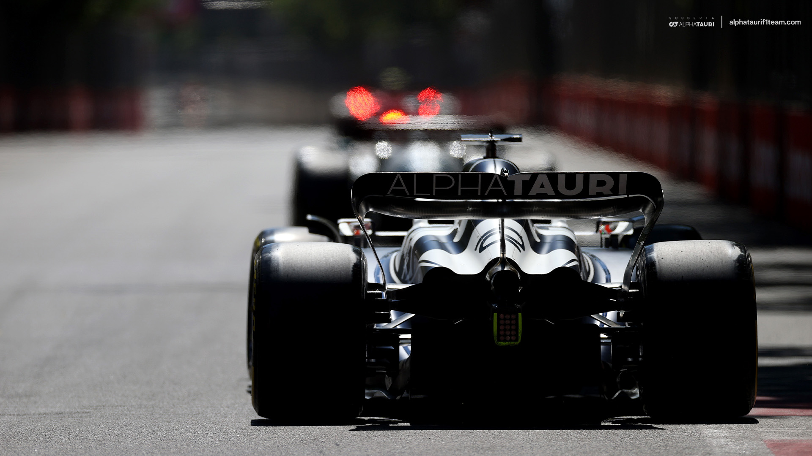
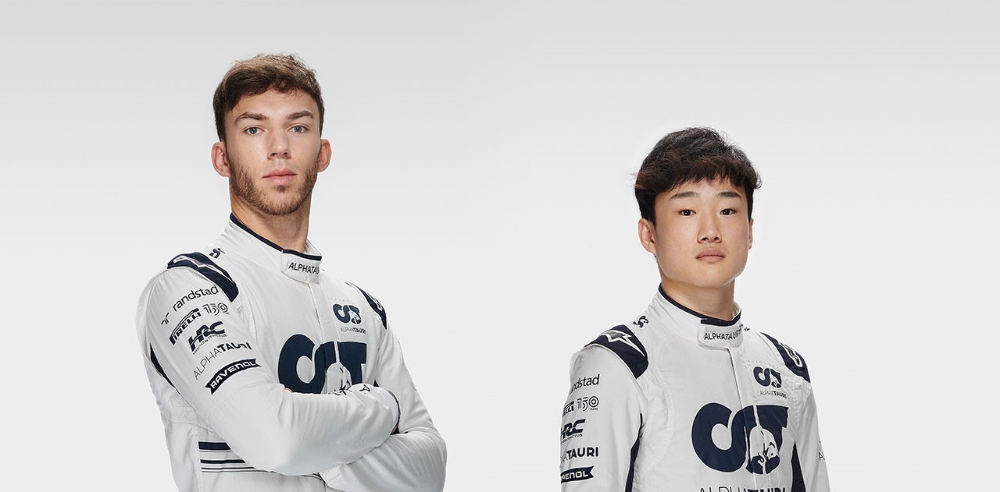
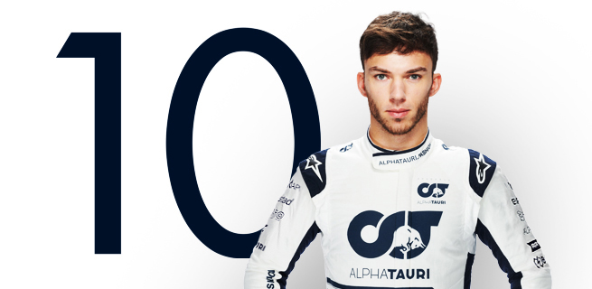
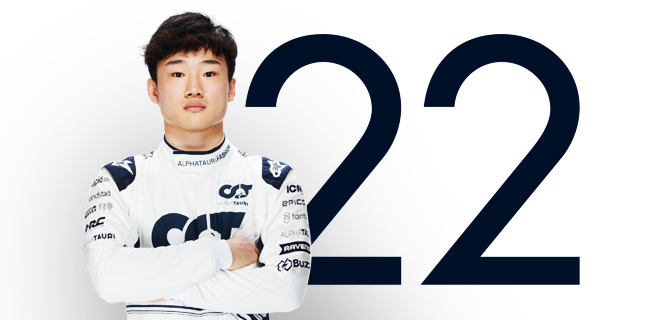
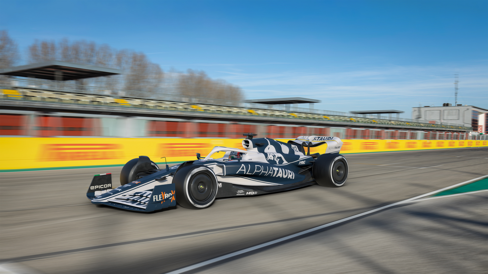

Overview

Scuderia AlphaTauri is one of two Red Bull-owned Formula 1 teams. From 2006 to 2019 it
was known as Scuderia Toro Rosso and since 2020, its name bears allegiance to the Red
Bull group’s premium fashion brand. It is a well established team in the world of
Formula 1 and has made significant progress over the three years from 2019 to 2021,
thanks to constant progress on the racing front and growth as a company.
Our team is Italian at heart, but it is made up of people from all around the world,
with no fewer than 35 different nationalities on the payroll. What has not changed is
the team’s commitment to bringing on young talent, in terms of its drivers and also of
its workforce and it is now a major player on the world motorsport stage with a highly
trained group of people at its core. Read More >>
Drivers

Every year our team takes part in the Formula 1 World Championship with the clear aim
of being in the heart of the mid-field action, with the ultimate objective of challenging
for wins. An integral part of that mission has always been to provide a launch pad for
talented youngsters making their way in this sport.
Many drivers come to Faenza having passed through the Red Bull Junior Programme, the
academy that aims to take the best youngsters all the way through the lower categories to F1.
Pierre Gasly

Pierre Gasly, Scuderia AlphaTauri’s French driver, had been knocking on the door of
Formula 1 ever since winning the 2016 GP2 series in dramatic fashion, taking the
title at the final round in Abu Dhabi. Actually, you could say he started knocking
at the age of 2, when he first used to go to kart tracks to watch his elder brothers.
Pierre has petrol in his veins, given that his grandfather used to kart and his father
tried his hand at a variety of motor sport disciplines. The Frenchman hails from the
city of Rouen, famous for a race track that used to host the French Grand Prix a long
time ago.
Since 2015, Pierre Gasly has combined racing with being on duty as the reserve driver
for Red Bull Racing. However, with no seats available in Formula 1 at the end of 2016,
he was given the chance to broaden his experience, by racing in the very competitive
Japanese Super Formula Championship.
Read More >>
Yuki Tsunoda

Scuderia AlphaTauri’s Japanese driver was born on 11 May 2000 in Kanagawa and, at 20
years of age is the youngest driver on the Formula 1 grid in 2021. The youngster will
be the 18th Japanese driver to compete in Formula 1, the first since Kamui Kobayashi
last raced in 2014.
In 2020, as part of the Red Bull Junior Team and Honda’s young driver programme,
Yuki Tsunoda finished a sensational third in the FIA Formula 2 Championship. He took
three wins, four pole positions and four podiums. A great season saw him win the
Anthoine Hubert Award for the best performance by a rookie. An impressive year saw
him pick up enough points for a superlicense and a race seat with Scuderia AlphaTauri.
Read More >>
Our 2022 Car

The new AT03 by Scuderia AlphaTauri is the racing car that highlights the fusion of tech,
innovation and style, bonding F1 with Red Bull’s premium fashion brand AlphaTauri.
Sweeping rule changes promise a new era of F1 with the cars radically redesigned to bring
more action to the track and closer racing between the teams. “Clearly, compared to 2021,
it’s a huge change in terms of look, in terms of design. The team had to start from a brand-new
page with these new regulations. It is going to be a big change."
According to team principal Franz Tost, continuity with the drivers and the team means
AlphaTauri will be well suited to this new era of F1. “I expect the car will be fast
because we have a strong team together, we did a lot of work on the mechanical side and
as well on the aerodynamics. We have two fantastic drivers: Pierre Gasly is well
experienced, and Yuki is in his second year, so I expect a good performance from him.
There’s no reason why we shouldn’t have a very strong season.”
Read More >>